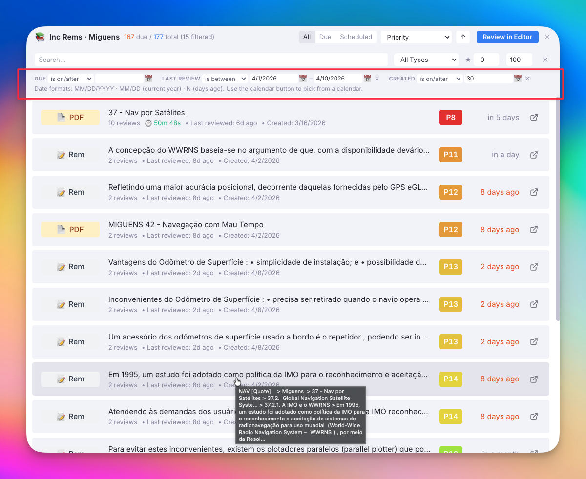
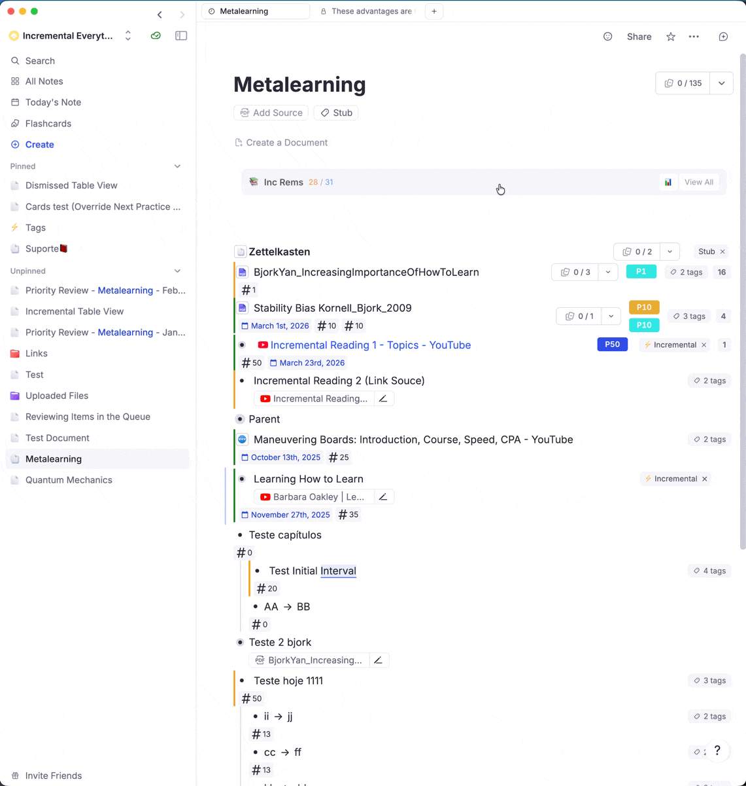
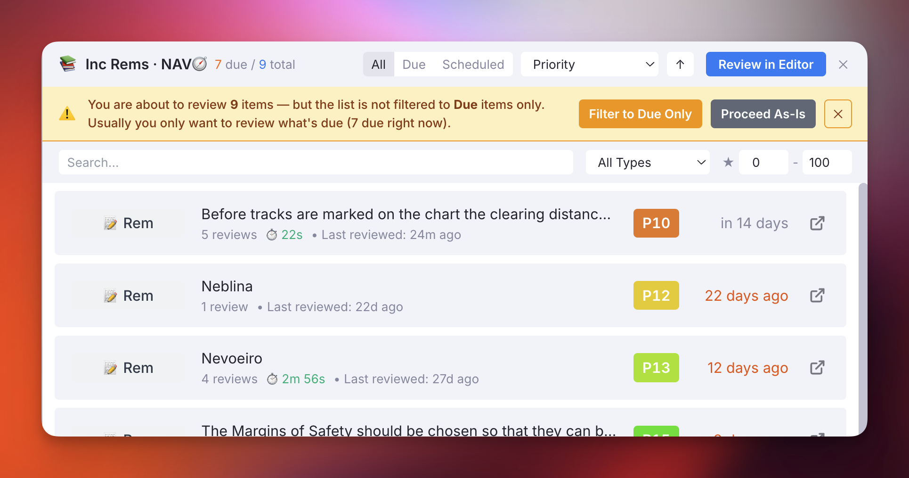
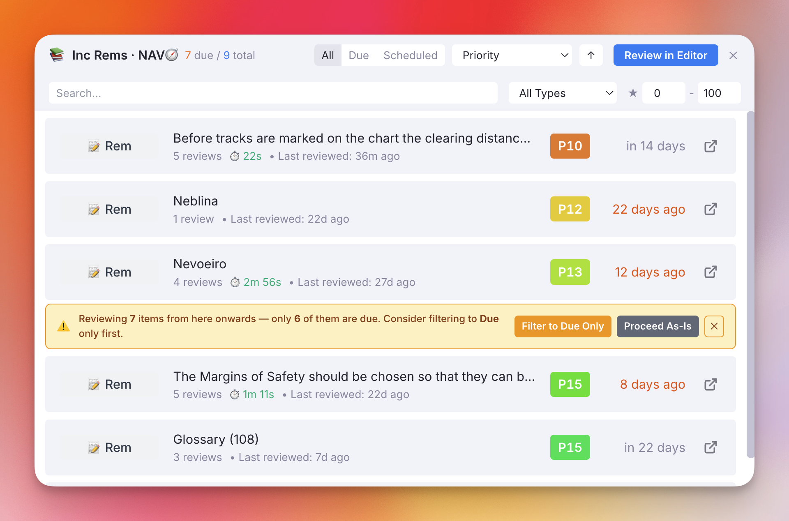
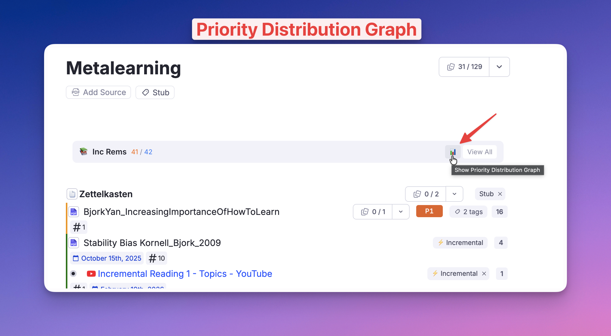
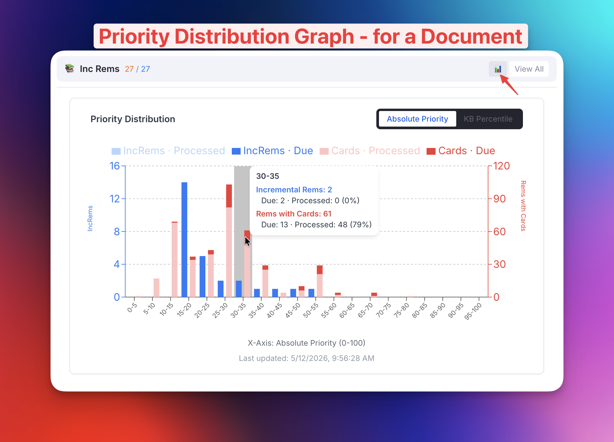
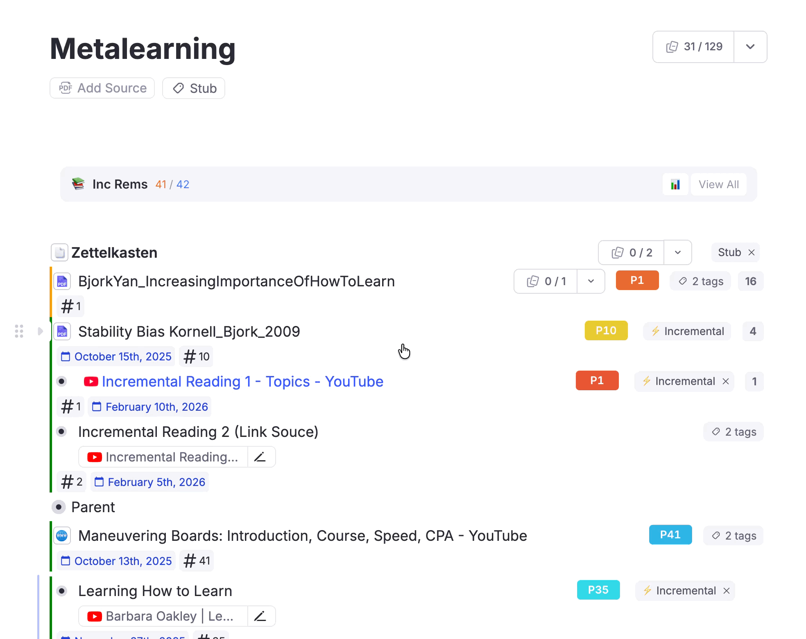
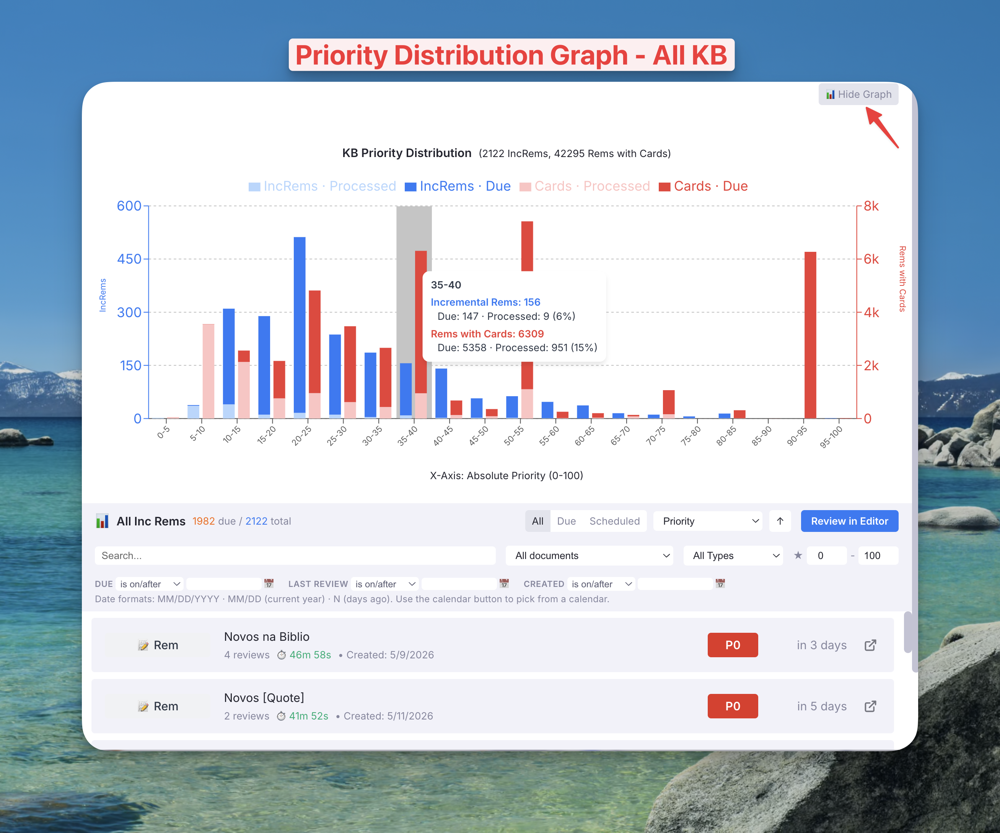
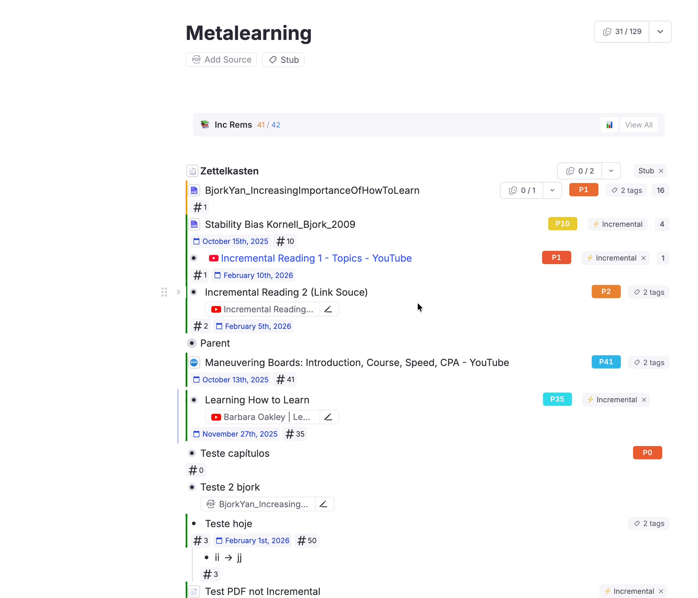

IncRem List & Main View¶
The IncRem List and All Inc Rems (Main View) are popup widgets that let you browse, filter, sort, and manage your Incremental Rems outside the queue. They provide a spreadsheet-like overview of your learning material with powerful inline controls.
Two Entry Points¶
IncRem List (Scoped)¶
The IncRem List popup shows Incremental Rems scoped to the current document. It opens when you click the IncRem Counter badge (the small counter that appears below the title of a document containing Incremental Rems).
- Heading format:
📚 Inc Rems · Document Name— shows the scoped document name (truncated at 30 characters with a full-name tooltip on hover) - Scope: Only shows IncRems that are descendants of the current document
- Use case: Quick access to all Incremental Rems within the document you're currently reading
All Inc Rems (Main View)¶
The All Inc Rems popup shows every Incremental Rem in your entire Knowledge Base. You can open it via a command or clicking the "View All" icon at the right side of the IncRem Counter badge.
- Heading format:
📊 All Inc Rems - Scope: Full Knowledge Base — all Incremental Rems across all documents
- Extra features:
- Document filter dropdown: Filter by top-level document
- KB Priority Distribution Graph (see below)
Features¶
Table Overview¶
Both widgets share the same table interface, displaying each Incremental Rem as a row with:
| Column | Description |
|---|---|
| Type badge | Color-coded badge indicating the type: PDF, PDF Extract, PDF Note, Web, Rem, etc. |
| Title | The Rem's text content, wrapping up to two lines. Pin references (📌) appear as an icon — hover to see the referenced content. Hover the title for a breadcrumb tooltip showing the Rem's location in the outline |
| Review stats | Number of reviews, total time spent, and last review date |
| Created | Date the Rem was first made Incremental (shown below the last review date) |
| Priority badge | Clickable priority value (P1–P100) with color gradient. Click to edit inline |
| Next rep date | Time until next scheduled review (e.g., "3 days ago", "in 2 weeks") |
| Review in Editor | 🔗 icon to start a timed review session directly from the list |
Filtering & Sorting¶
The table header provides several controls:
- Document filter (All Inc Rems only): Dropdown to filter by top-level document. Shows document name and item count. This filter is preserved across Review in Editor sessions
- Status filter tabs:
All|Due|Scheduled— filter by whether items are currently due - Type filter dropdown: Filter by IncRem type (PDF, Web, Rem, etc.)
- Priority range: Star icon + min/max inputs to filter by absolute priority range
- Search bar: Text search across Rem titles
- Sort dropdown: Sort by Priority, Next Rep Date, Last Review Date, Created At, Total Time, or Review Count
- Sort direction: Toggle ascending/descending with the arrow button
Date Filters¶
A dedicated date filter bar sits below the main filter row. It provides three independent date fields:
| Field | Filters by |
|---|---|
| Due | The next scheduled review date |
| Last Review | The most recent review session date |
| Created | The date the Rem was first made Incremental |
Each field supports six comparison operators via a dropdown:
| Operator | Meaning |
|---|---|
| is | Exactly on that calendar day |
| is before | Strictly earlier than the date |
| is after | Strictly later than the date |
| is on/before | On or before the date |
| is on/after | On or after the date |
| is between | Within a range — a second date input appears for the end date |
Accepted Input Formats¶
Each input field accepts three formats:
| Format | Example | Meaning |
|---|---|---|
MM/DD/YYYY |
4/15/2026 |
A specific date |
MM/DD |
4/15 |
That month and day in the current year |
N (integer) |
30 |
N days ago from today (e.g. 0 = today, 7 = one week ago) |
[!TIP] Use the calendar button (📅) next to each input to open the native date picker and select a date visually. The picked date is inserted in
M/D/YYYYformat. The calendar button can also be used even if the field already has a valid date — it will pre-select the current value.[!NOTE] If you type a value that is not recognized as a valid date or integer, the input border turns red and the background gets a subtle red tint, giving you immediate visual feedback. The filter is not applied for invalid values.
A small hint line appears at the bottom of the date filter bar summarizing the accepted formats:
Date formats: MM/DD/YYYY · MM/DD (current year) · N (days ago). Use the calendar button to pick from a calendar.
Practical Examples¶
- Show only items due in the last 7 days: Set Due → is on/after →
7 - Show items reviewed before a specific date: Set Last Review → is before →
1/1/2026 - Show items created this month: Set Created → is between →
4/1and4/30 - Show items never reviewed yet: Leave Last Review empty and sort by Last Review (ascending)

Inline Priority Editing¶
Click the Priority Badge on any row to open an inline editor directly below the row. This works exactly like the priority widgets in the queue:
- Input field: Type a new priority value (0–100)
- Arrow keys: Press ↑/↓ to increment/decrement the priority
- Submit: Press
Enteror click "Save" - Cancel: Press
Escapeor click outside
The change is saved immediately and the badge updates in place.

Review in Editor Flow¶
The 🔗 Review in Editor icon (rightmost column) provides a powerful workflow for reviewing Incremental Rems without entering the queue. It combines elements of the queue's Review & Open button and the Execute Repetition Command — opening the Rem in the editor with a running timer that records both the review and time spent — but launched directly from the IncRem List.
How It Works¶
- Click the 🔗 icon next to any Incremental Rem in the list
- The plugin:
- Computes the scheduler's suggested next interval
- Starts the Editor Review Timer
- Opens the Rem in the editor (or as a page for PDF Notes)
- Closes the IncRem List popup
- Review the content in the editor — take notes, extract information, use AI tools
- When finished, click "End Review and Back to IncRem List" on the Timer Widget
- The timer:
- Records the repetition with the time spent reviewing
- Reschedules the Rem for the next review
- Reopens the IncRem List popup with your previous filters, sorting, and scope restored
Due-Filter Warning¶
To help you stay focused on your active learning schedule, the plugin includes a safety guard that checks if your current list is filtered to Due items only before launching a review.
If you click "Review in Editor" while viewing your full backlog or a custom filter that includes non-due items, a warning will appear:
- Header Level: If starting from the main top-level button, a yellow warning banner appears at the top of the table. It displays your current filtered count vs. the actual due count.
- Row Level: If starting from a specific row, an inline warning box appears immediately below that row. It calculates the specific sub-queue from that point onwards and warns you if most of those items are not yet due.
In both cases, you can click "Filter to Due Only" to instantly update your view, or click "Proceed As-Is" to continue with your current selection.


State Preservation¶
When launching a review from the list, the plugin saves your current filter/sort state in session storage. This means when you return via "End Review and Back to IncRem List", you see the exact same view you had before — same filters, same sort order, same priority range. This makes it easy to work through a batch of items without losing your place.
Differences from Queue's "Review & Open"¶
| Aspect | Queue "Review & Open" | IncRem List "Review in Editor" |
|---|---|---|
| When repetition is recorded | Immediately (before opening editor) | On timer end (after review) |
| Rescheduling | Done immediately when clicking the button (timer only adds review time) | Deferred to timer end — the scheduler's interval is pre-computed and the timer records the full repetition on "End Review" |
| Return destination | Back to queue document | Back to IncRem List (with same filters) |
| End button text | "End Review and Back to Queue" | "End Review and Back to IncRem List" |
When to Use It¶
- Batch reviewing: Work through your IncRem list systematically, reviewing items one by one
- Targeted review: Filter to a specific type or priority range, then review only those items
- Outside the queue: Review specific items without entering the full queue session
- Document-scoped work: Focus on all IncRems within a single document
Priority Distribution Graphs¶
The plugin provides two priority distribution graphs at different scopes, helping you visualize how your priorities are spread across your learning material.
Document Priority Distribution Graph¶
The IncRem Counter badge includes a 📊 button (to the left of "View All") that toggles an inline priority distribution graph for the current document.

- How to view: Click the 📊 icon on the IncRem Counter badge below the document title
- Scope: Only IncRems within the current document's scope
- Display: Appears inline, directly below the counter badge
- Toggle: Click again to hide it
- Two views:
- Absolute Priority View: See how your items are distributed across the 0–100 priority scale
- KB Percentile View: See how your document's items rank compared to the entire Knowledge Base
This is useful for quickly assessing how priorities are distributed within a specific document or project — for example, to see if you have too many low-priority items that need attention.
Each bar is stacked to show the processing status within each priority bucket:
| Sub-bar | Color | Meaning |
|---|---|---|
| Due (top, saturated) | 🔵 Blue (IncRems) / 🔴 Red (Cards) | Currently due for review |
| Processed (bottom, light) | Light blue / Light red | Already reviewed and scheduled forward |
Hover over any bar for a tooltip showing total, due, processed counts, and % processed for both series.


KB Priority Distribution Graph¶
The All Inc Rems (Main View) includes a separate 📊 KB Priority Graph button in the top bar that shows a larger, more detailed graph covering your entire Knowledge Base.
- How to view: Open the All Inc Rems main view → click the "📊 KB Priority Graph" button in the top bar
- Scope: Full Knowledge Base — all IncRems and all flashcard-bearing Rems
- Display: Slides open above the table
The KB graph displays two stacked bar series on a shared x-axis of priority bins (0–5, 5–10, ..., 95–100). Each bar splits its bucket into due (top, saturated) and processed (bottom, lighter) items:
| Series | Y-Axis | Sub-bar | Color | Meaning |
|---|---|---|---|---|
| Incremental Rems | Left | Due | 🔵 Blue | IncRems with nextRepDate ≤ now |
| Processed | Light blue | IncRems scheduled forward | ||
| Rems with Cards | Right | Due | 🔴 Red | Rems with at least one due card |
| Processed | Light red | Rems with all cards scheduled forward |
Hover over any bar for a tooltip showing the full breakdown: total, due, processed, and % processed for both series.


Why They're Useful¶
- Processing status at a glance: The stacked bars immediately reveal how much of each priority bucket is still outstanding vs. already processed — no more guessing from totals alone
- Priority balance: See whether your priorities are concentrated too heavily at one end or well-distributed
- Content type comparison (KB graph): Compare how your reading material (IncRems) and flashcard material (Cards) are distributed across priority levels
- Document-level focus (Document graph): Analyze priority distribution within a specific project or reading scope
- Identifying outliers: Spot priority ranges that are over- or under-represented
- Planning: Use the distribution to decide where to focus your next priority adjustments and reviews